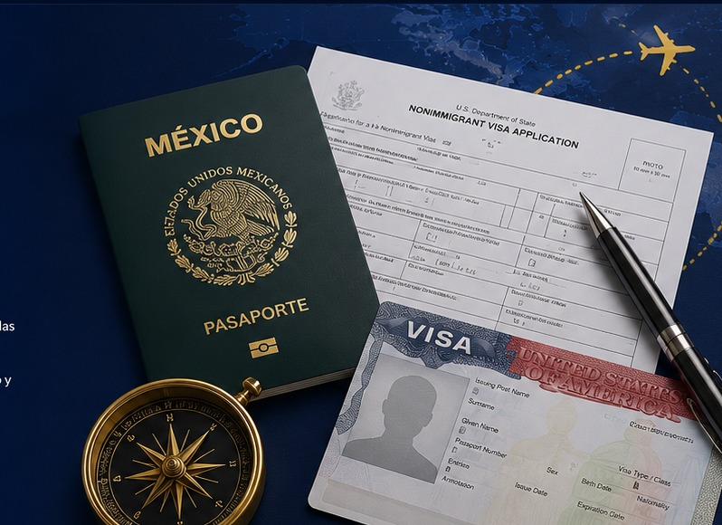

Valoramos tu caso
Escuchamos tu situación, conocemos tus objetivos y resolvemos tus primeras dudas. Queremos entender quién eres, por qué deseas viajar y cuáles son las circunstancias que deben considerarse.

Si es la primera vez que solicitarás una Visa Americana, es normal tener dudas sobre el proceso y sobre cómo presentar correctamente tu solicitud.
En MI VISA GDL comenzamos por conocer tu situación, analizamos tu caso y te orientamos durante cada etapa para que llegues a tu entrevista consular con mayor preparación, seguridad y confianza.
No prometemos visas. Diseñamos estrategias.
Nadie puede garantizarte una Visa Americana.
La decisión de aprobar o negar una Visa Americana no está en manos de un abogado, un gestor o un asesor. Corresponde exclusivamente al Oficial Consular de los Estados Unidos.
Solicitar una Visa Americana por primera vez no consiste únicamente en llenar una solicitud. Nuestro trabajo comienza antes.
Escuchamos tu situación, conocemos tus objetivos y resolvemos tus primeras dudas. Queremos entender quién eres, por qué deseas viajar y cuáles son las circunstancias que deben considerarse.
Revisamos la información relevante de tu situación para identificar qué debe considerarse al preparar tu solicitud y tu entrevista.
Te orientamos para presentar la información correspondiente de manera clara, consistente y acorde con tu situación.
Trabajamos contigo para que conozcas tu solicitud, comprendas los aspectos relevantes y puedas responder de manera clara, natural y honesta.
Para muchas personas, la entrevista consular es el momento que más nervios genera. Es normal preguntarse qué pueden preguntar, cómo responder o qué información debemos conocer.
Debes conocer la información que proporcionaste y comprender lo que estás presentando.
Revisamos posibles temas y situaciones relacionadas con tu solicitud para que llegues preparado.
Buscamos que respondas con seguridad, sin aprender respuestas artificiales.
La información debe corresponder con tu situación real.
No somos una fábrica de citas. Te ofrecemos acompañamiento profesional, análisis real y preparación estratégica para que llegues mejor preparado a tu entrevista consular.
Experiencia profesional aplicada a la orientación y preparación de trámites.
Cada persona tiene una historia, circunstancias y objetivos diferentes.
Primero analizamos la información relevante de tu caso y, a partir de ahí, orientamos.
No te vamos a prometer una aprobación que no podemos garantizar.
Opiniones publicadas por clientes de MI VISA GDL en Google.
“Excelente servicio. Todo el proceso fue muy claro y me brindaron atención en cada paso. Fueron muy amables, profesionales y resolvieron todas mis dudas. Me sentí acompañada y con mucha confianza durante el trámite. ¡Los recomiendo!”
“Muy buena, me ayudaron en mi trámite por primera vez y después con mi renovación y fueron muy profesionales y eficientes.”
“A mí me lo recomendaron, excelente servicio, seriedad, confianza y honestidad.”
“Cuando necesité renovar mi visa para viajar de urgencia a Estados Unidos, recibí el mejor trato a mi necesidad, pero noté un profesionalismo, sin promesas falsas...”
Estas son algunas de las dudas más comunes de quienes solicitan una Visa Americana por primera vez.
Sí. Una persona que nunca ha tenido una Visa Americana puede iniciar una solicitud. Lo importante es conocer su situación y preparar correctamente la información correspondiente.
Para iniciar correctamente tu trámite conviene contar con pasaporte mexicano vigente. Si tienes dudas sobre tu documentación, podemos revisarlas durante la valoración.
Sí. La orientación y revisión de la información de tu solicitud forman parte del proceso de trabajo.
Te orientamos durante las diferentes etapas del trámite y sobre el proceso correspondiente para obtener tu cita.
Sí. La preparación para la entrevista forma parte de nuestro servicio. Trabajamos contigo para que conozcas tu solicitud, comprendas el proceso y puedas responder con claridad, seguridad y honestidad.
No. La preparación no consiste en memorizar respuestas. Se trata de conocer tu propia información y estar preparado para responder de manera natural y honesta.
No. Nadie puede garantizar una aprobación. La decisión corresponde exclusivamente al Oficial Consular de los Estados Unidos.
Es precisamente una de las razones por las que primero valoramos tu caso. Antes de actuar, necesitamos conocer la situación para determinar cómo orientarte.
Una negativa previa no debe analizarse como un trámite automático. Es importante revisar las circunstancias del caso antes de decidir cómo proceder.
Atención con cita previa. Puedes realizar tu valoración de manera presencial o remota.
Colonia Centro
Guadalajara, Jalisco
A dos cuadras del Teatro Degollado.
Teléfono / WhatsApp
33 19 65 55 52
No comiences tu trámite a ciegas.
Conoce tu situación, resuelve tus dudas y recibe orientación personalizada antes de iniciar.
Valoración presencial o remota · $500 MXN
Quiero agendar mi valoración ↗